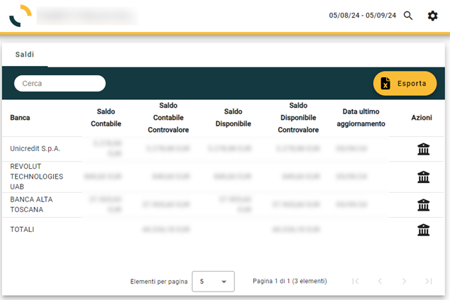
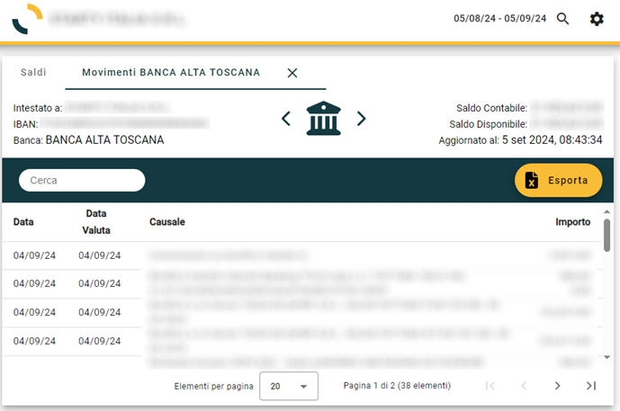

Portale Open Banking
La procedura, tramite le credenziali configurate per l'utente, consente di accedere direttamente al portale Open Banking.
Attualmente la funzionalità è puramente informativa e consiste nella possibilità di consultare i saldi e la movimentazione dei conti correnti bancari: è possibile visualizzare una pagina con i saldi di tutte le banche per le quali l’utente finale ha concesso l’autorizzazione; per ogni banca si può visualizzare una pagina con i movimenti ed è inoltre possibile avere una pagina con i movimenti di tutte le banche.

